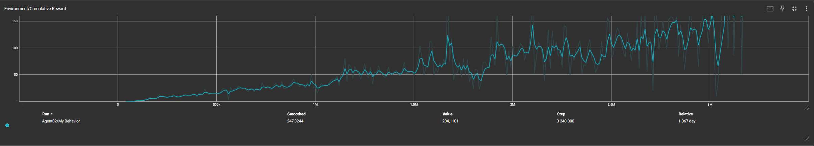

Mózg Agenta: Uczenie ze Wzmocnieniem
Jak nasz samochód nauczył się jeździć samodzielnie za pomocą biblioteki Unity ML-Agents i algorytmu PPO.
Czym jest Reinforcement Learning?
Nasz autonomiczny kierowca opiera się na koncepcji Uczenia ze Wzmocnieniem (Reinforcement Learning). Zamiast z góry programować instrukcje "jak prowadzić", stworzyliśmy system, który uczy się metodą prób i błędów. Agent (samochód) wchodzi w interakcję ze środowiskiem (trasą), podejmuje decyzje (skręt, gaz, hamulec) i otrzymuje informacje zwrotne w postaci nagród za dobre zachowanie lub kar za złe. Wykorzystujemy do tego niezawodny algorytm PPO (Proximal Policy Optimization) dostarczany przez ML-Agents.
Sensory: Oczy Agenta
Aby auto mogło "widzieć" trasę, używamy komponentu Ray Perception Sensor 3D. Działa on jak wąsy, wypuszczając wirtualne promienie (Raycasty) dookoła pojazdu. Wykrywają one ściany i krawędzie toru. Oprócz tego, do sieci neuronowej przekazywana jest precyzyjna informacja o aktualnej prędkości pojazdu. Dzięki temu agent wie, jak blisko znajduje się przeszkoda i jak szybko się do niej zbliża.
System Kar i Nagród
-
Checkpointy: Przejechanie przez niewidzialne bramki na trasie daje nagrodę (+1.0), motywując auto do ruchu naprzód.
-
Kary Czasowe: Agent otrzymuje minimalną karę w każdej klatce symulacji, co wymusza optymalizację trasy i jazdę tak szybko jak to możliwe.
-
DeathZone: Zderzenie ze specjalnymi płotkami DeathZone kończy się natychmiastową potężną karą (-1.0) i resetem epizodu. Uczy to trzymania się blisko środka drogi.
-
Dachowanie: Jeżeli kąt nachylenia auta ulega odwróceniu (dachowanie), natychmiastowo przerywamy i resetujemy proces nauki.
Trening, Klonowanie i Optymalizacja
Trening jednej sztucznej inteligencji na długiej trasie mógłby zająć miesiące. Aby temu zapobiec, zastosowaliśmy klonowanie agentów. Na jednej scenie umieściliśmy kilkadziesiąt pojazdów trenujących symultanicznie. Wyłączyliśmy kolizje między nimi ("przenikają się jak duchy"), dzięki czemu wszystkie korzystają z jednego toru wyścigowego, przesyłając równolegle tysiące danych do środowiska Pythona. Model początkowo trenował na uproszczonym "boxie", aby następnie doszkolić się na zaawansowanej fizyce docelowego samochodu Audi R8.
Proces Nauki w Praktyce
Na poniższym materiale wideo możesz zobaczyć jak proces szkolenia przebiegał w środowisku Unity, począwszy od chaotycznych, losowych ruchów, po płynne pokonywanie zakrętów.
Wykresy Wyników Treningu (TensorBoard)
Poniższe wykresy przedstawiają zbieżność procesu uczenia (skumulowaną nagrodę oraz długość epizodu) wygenerowane za pomocą TensorBoard:

Wytrenowany za pomocą uczenia maszynowego "mózg" pojazdu został ostatecznie
skompresowany do lekkiego pliku .onnx. Z tego pliku samochód w ostatecznej grze
korzysta jako z w pełni zoptymalizowanego sterownika.